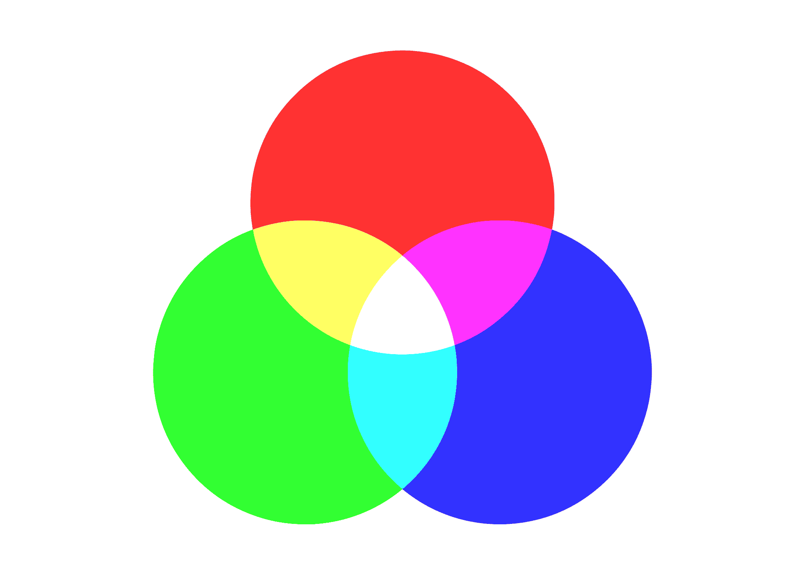
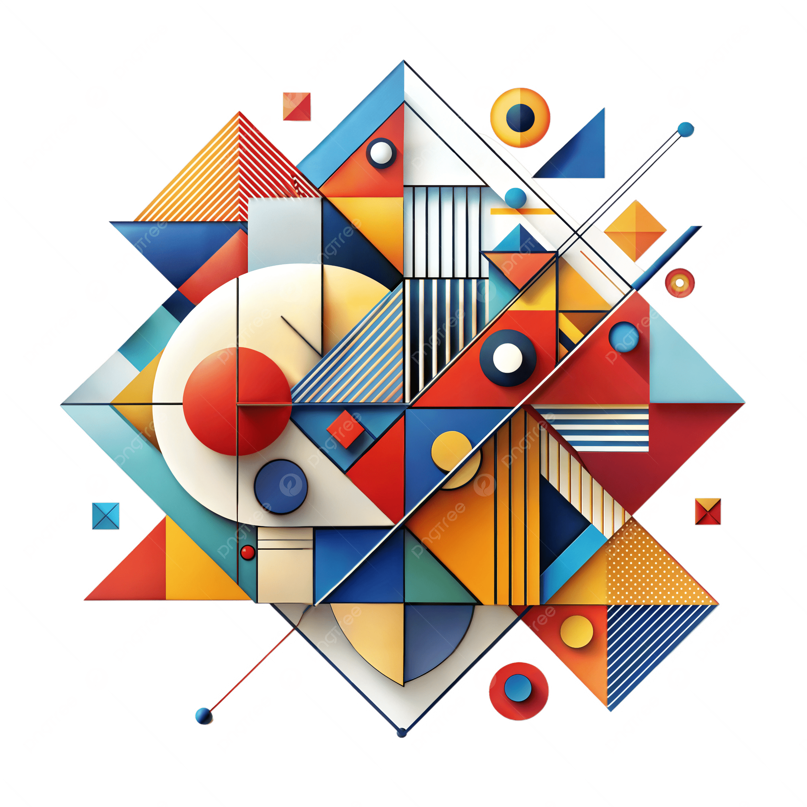

Cores
Secundá
rias

Introdução
As cores secundárias são laranja, roxo e verde. Elas recebem essa denominação uma vez
que surgem da união de duas cores primárias, misturadas em iguais proporções.
Essa é a forma tradicional de se entender a relação entre as cores, desenvolvida há
tempos pelo artista Leonardo da Vinci, o cientista Isaac Newton e outros estudiosos.
As três cores secundárias são:
Laranja = vermelho + amarelo
Verde = azul + amarelo
Roxo/Violeta = azul + vermelho
Tecnicamente, as cores secundárias possuem função de equilíbrio e transição entre as
cores primárias, sendo amplamente utilizadas em design, pintura, publicidade e
composição visual para criar contraste, harmonia e profundidade cromática.

Laranja
Simboliza energia, criatividade, entusiasmo,.
A cor laranja simboliza energia, criatividade, entusiasmo, vitalidade e alegria. Como uma cor quente resultante da mistura de vermelho e amarelo, ela estimula a mente, promove a comunicação, a sociabilidade e está associada ao sucesso e prosperidade. É uma cor vibrante que remete ao verão, calor e espontaneidade;

Roxo
Simboliza Espiritualidade.
A cor roxo simboliza espiritualidade, mistério, criatividade e transformação. Historicamente ligado à nobreza e ao poder, este tom equilibra a estabilidade do azul com a energia do vermelho, sendo associado à sabedoria, sofisticação, luxo e introspecção. Transmite uma sensação de tranquilidade e convida à reflexão e ao autoconhecimento.

Verde
Simboliza Equilíbrio.
O verde é amplamente associado ao equilíbrio, harmonia, renovação e natureza. Como cor que representa o ponto de encontro entre o coração (emoções) e a mente, transmite sensações de calma, segurança e vitalidade. É frequentemente utilizado para evocar sustentabilidade, saúde e prosperidade.